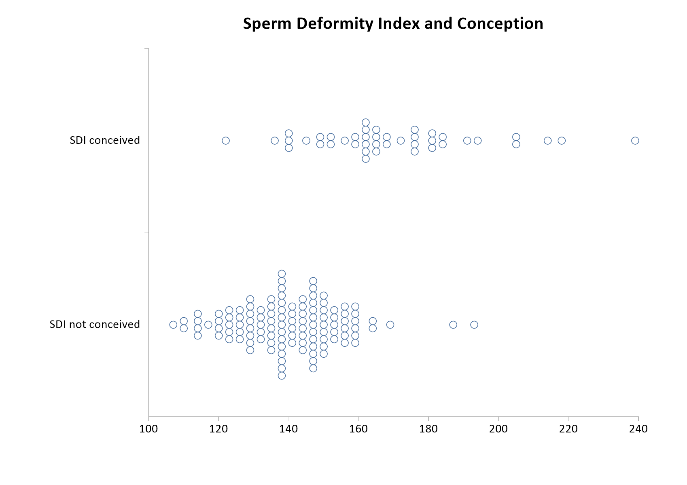

Menu location: Graphics_Spread.
This is a useful way to show the spread of data across groups. It is one step back from the Box and Whisker plot in that it gives an entirely pictorial representation of the spread of your data. The vertical axis is divided into an arbitrary number of divisions which are the width of a plot point; if more than one data point occupies a division it is plotted alongside the first, thus a concentration of data at a particular value is represented by a broad band.

Example
Test workbook (Graphics worksheet: SDI conceived, SDI not conceived).
The plot above shows the Sperm Deformity Index (SDI) values of Aziz et al. (1996), from semen samples of men in an infertility study, in two groups: the 42 men whose partners conceived and the 116 men whose partners did not. The same data are used in the ROC curve example.
To draw it in StatsDirect open the test workbook using the file open function of the file menu. Then select Spread from the Graphics menu. Select the columns marked "SDI conceived" and "SDI not conceived" when prompted for data. The first column selected is plotted at the top. The chart above is titled "Sperm Deformity Index and Conception"; otherwise the chart is titled "Spread plot".
For this example:
SDI conceived: n = 42, range 122 to 239, median 165.5
SDI not conceived: n = 116, range 107 to 193, median 140.5
SDI conceived: broadest band 6 values at 162
SDI not conceived: broadest band 15 values at 138
A band is a column of values that lie within the width of one plot point of the first (lowest) value in the column; on the scale from 100 to 240 of this plot a plot point is about two units of SDI wide. The men whose partners did not conceive form a dense band between about 125 and 160, whereas the values of the men whose partners conceived are spread more widely and lie mostly higher. The spread plot shows the two distributions without summarising them; the ROC curve example measures how well the index separates the two groups.
This R code reproduces the illustration above. It needs no packages and was checked with R 4.6.1. Paste it into R, or save it as a script and run it.
# Spread plot: the StatsDirect help illustration (Aziz et al. 1996, sperm deformity
# index of men whose partners conceived and of men whose partners did not; the test
# workbook's Graphics worksheet columns SDI conceived and SDI not conceived) in R
conceived <- c(159, 136, 149, 156, 191, 169, 194, 182, 163, 152, 145, 176, 122, 141,
172, 162, 165, 184, 239, 178, 178, 164, 185, 154, 164, 140, 207, 214,
165, 183, 218, 142, 161, 168, 181, 162, 166, 150, 205, 163, 166, 176)
not_conceived <- c(165, 140, 154, 139, 134, 154, 120, 133, 150, 146, 140, 114, 128,
131, 116, 128, 122, 129, 145, 117, 140, 149, 116, 147, 125, 149,
129, 157, 144, 123, 107, 129, 152, 164, 134, 120, 148, 151, 149,
138, 159, 169, 137, 151, 141, 145, 135, 135, 153, 125, 159, 148,
142, 130, 111, 140, 136, 142, 139, 137, 187, 154, 151, 149, 148,
157, 159, 143, 124, 141, 114, 136, 110, 129, 145, 132, 125, 149,
146, 138, 151, 147, 154, 147, 158, 156, 156, 128, 151, 138, 193,
131, 127, 129, 120, 159, 147, 159, 156, 143, 149, 160, 126, 136,
150, 136, 151, 140, 145, 140, 134, 140, 138, 144, 140, 140)
groups <- list("SDI conceived" = conceived, "SDI not conceived" = not_conceived)
# A spread plot is a one dimensional scatter of each group's values, with values
# that fall together stacked side by side so that a concentration of data shows as
# a broad band. R's stripchart draws one; method = "stack" stacks equal values.
# The groups are reversed so that the first is at the top, as StatsDirect draws it.
op <- par(mar = c(4, 9, 3, 1))
stripchart(rev(groups), method = "stack", pch = 1, las = 1, main = "Spread plot")
# The summary of each group that the illustration states
for (g in names(groups)) {
x <- groups[[g]]
cat(g, ": n = ", length(x), ", range ", min(x), " to ", max(x), ", median ",
median(x), "\n", sep = "")
}
# StatsDirect stacks values that are close, not only equal ones: it sorts each group,
# starts a column at the smallest value not yet drawn and adds to that column every
# following value within the width of one plot point of the column's first value.
# Its default marker is 12 pixels across and the scale axis of this plot is 814
# pixels long, so the width is 12/814 of the axis range, and the axis runs between
# the round numbers that enclose the data (100 to 240 here): a column holds values
# within about two units of its first.
xlim <- range(pretty(unlist(groups)))
width <- diff(xlim) * 12 / 814
columns <- function(x) {
x <- sort(x)
at <- numeric(0)
count <- integer(0)
i <- 1
while (i <= length(x)) {
j <- i
while (j < length(x) && x[j + 1] - x[i] <= width) j <- j + 1
at <- c(at, x[i])
count <- c(count, j - i + 1)
i <- j + 1
}
data.frame(at = at, count = count)
}
stacks <- lapply(groups, columns)
for (g in names(groups)) {
s <- stacks[[g]]
b <- which.max(s$count)
cat(g, ": broadest band ", s$count[b], " values at ", s$at[b], "\n", sep = "")
}
# The plot as StatsDirect draws it: the scale axis across, the first group at the
# top, each column of markers centred on its group's line with the markers a fixed
# distance apart, squeezed only when the tallest column would overflow its band,
# and with the title given to the illustration
k <- length(groups)
marker <- 0.04
plot(NA, xlim = xlim, ylim = c(0, k), xaxs = "i", yaxs = "i", yaxt = "n", bty = "l",
xlab = "", ylab = "", main = "Sperm Deformity Index and Conception")
axis(2, at = k - seq_len(k) + 0.5, labels = names(groups), las = 1, tick = FALSE)
for (g in seq_len(k)) {
s <- stacks[[g]]
step <- min(marker, (1 - marker) / max(s$count))
centre <- k - g + 0.5
for (i in seq_len(nrow(s))) {
y <- centre + step * (seq_len(s$count[i]) - (s$count[i] + 1) / 2)
points(rep(s$at[i], s$count[i]), y, pch = 1)
}
}
par(op)
# The men whose partners did not conceive form a dense band between about 125 and
# 160; the values of the men whose partners conceived are spread more widely and
# lie mostly higher. The plot shows the two distributions without summarising them.